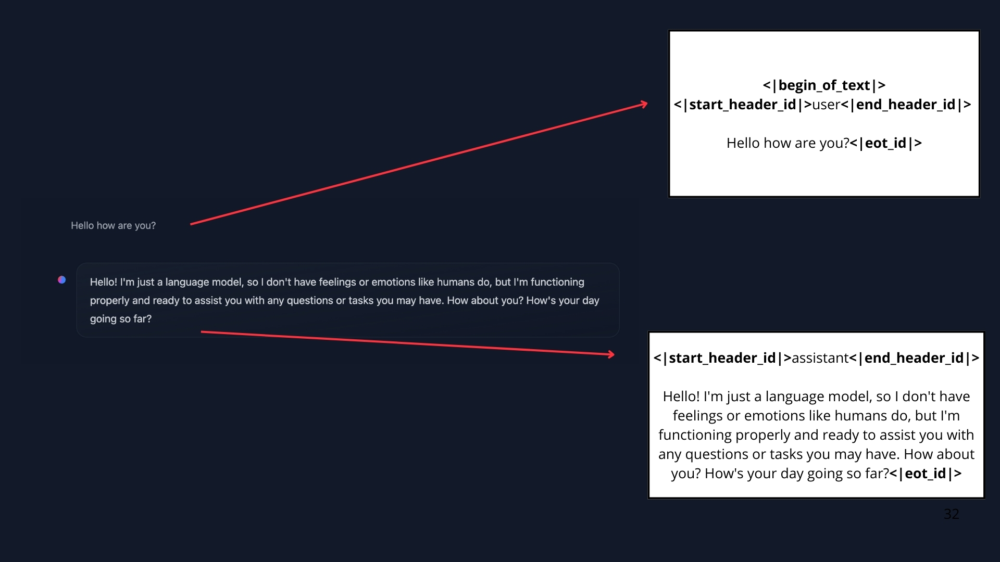

来源：https://huggingface.co/learn/agents-course/unit0/onboarding#step-2-join-our-discord-community
Intro
tools
需要 ollama，作为Agent的大脑。smolagents 创建自己的 Agent
什么是 Agents
智能体：一个能够理解自然语言，然后推理、规划和与其环境交互的 AI 模型。
比如你下达一个煮咖啡的命令，Agents 接收指令，它理解自然语言，然后进行推理和规划，弄清楚自己需要哪些步骤和工具。有了规划，他会行动，使用它知道的工具来完成任务。
一个 Action, 涉及到使用多种 Tools 来完成。Tools 的作用是增强 Agent 的能力。
之所以称它为 Agent，是因为它有能动性，就是自主行动，产生影响，即他可以与所处环境进行交互。
Agent 更精确的定义是：代理是一个利用 AI 模型与环境交互以实现用户定义目标的系统。它结合推理、规划和执行动作（通常通过外部工具）来完成任务。
Agents 组成部分
-
The Brain (AI Model)：
- 思考推理规划，都放生在这里
- 在代理中找到的最常见的 AI 模型是 LLM（大型语言模型），它将文本作为输入，并以文本作为输出。已有的大模型已经经过训练，并且有很好的泛化能力，
- 当然也可以使用 VLM 视觉大模型
-
The Body：
- 代表Agent 所有可执行的操作，取决于Agent 被配置了什么
什么是LLM
大多数 LLM 都基于 Transformer 架构构建——这是一种基于“注意力”算法的深度学习架构。有三种类型的 Transformer：
-
Encoders
- 情感人类，识别文本中的实体，理解上下文提取答案
- 代表模型：BERT
-
Decoders
- 如文本生成，文本摘要，翻译，聊天机器人，代码生成
- 代表模型：GPT，Llama
-
Encoder-decoders (Seq2Seq)
- 处理序列到序列到问题
- 代表模型：原始Transformer，T5， BART
虽然，但是LLMs 通常是基于解码器的模型，LLM 的基本原理简单而高效：其目标是根据先前Token的序列预测下一个Token。
- Token：LLM 处理文本的基本单元，可以是单词、子词或字符。
- Tokenization：将文本分割成 Token 的过程，是 LLM 处理文本的第一步。
- Special tokens：是语言模型词汇表中的预定义符号，用于指导模型的处理，而不是表示实际的词。例如：
<bos>(Beginning of Sequence)：表示序列的开始。用于指示模型开始生成文本。<eos>(End of Sequence)：表示序列的结束。用于指示模型停止生成文本。<pad>(Padding Token)：用于填充较短序列，以使所有输入序列具有相同的长度。这在批量处理数据时是必需的。<unk>(Unknown Token)：表示词汇表中不存在的词。当模型遇到词汇表外的词时，会用<unk>替换它们。
什么是 next token prediction
LLMs 被认为具有自回归性，这意味着一次输出的内容成为下一次输入的内容。这个循环会持续进行，直到模型预测下一个标记是 EOS 标记，此时模型可以停止。
但单次解码循环期间会发生什么？
 |
|---|
| 预测下一个Token |
最容易的 Decoding strategy 是选择有最大得分的 Token 作为这一次预测的结果。
常用的策略是 Beam Search Decoding。【hold，更多解码内容见NLP课程】
Attention 机制很重要
Transformer 在预测下一个词时，句子中的每个词并不都同等重要；在句子“法国的首都是……”中，“法国”和“首都”这样的词携带了最多的意义。个过程被证明是极其有效的，用于识别最相关的词以预测下一个标记。适用于越来越长的序列。
KAQ：Transformer 架构的注意力机制如何实现的？
它通过计算输入序列中每个词与当前输出词的相关性，赋予不同的权重，从而使模型能够关注重要信息，处理长距离依赖关系，并提高生成质量。
Scaled Dot-Product Attention 和 Multi-Head Attention 是 Transformer 中常用的注意力机制实现方式。
Prompting 对于 LLM 很重要
Prompt 是一条连续的字符串，作为语言模型的输入。用户通过 Prompt 和 LLM 交互。LLM 的唯一工作是通过查看每个输入令牌来预测下一个 Token，并选择哪些 Token 是重要的。所以用户输入的措辞非常重要。
这个你输入LLM 的内容叫做 Prompt，精确设计 Prompt 和以引导 LLM 输出更精确的内容。
KAQ: LLM 是如何训练的？
LLMs 是在大量文本数据集上进行训练的，通过自监督（self-supervised ）或掩码语言模型目标（masked language modeling objective），它们学习预测序列中的下一个词。
通过此，LLM 可以学习语言中的结构和文本中的潜在模式，使得模型可以泛化到未见过的数据。
如何使用 LLM
- 本地运行，当你有高效的硬件时。
- 使用 Cloud/API
Messages And Special Token
当你在与LLM 进行交互时，你看到的是 UI，实际上你输入给 LLM 的 prompt 其实是在跟LLM进行交换信息（Message）。在幕后，这些消息被连接并格式化为模型可以理解的 Prompt。
Special Token 是LLM用来界定用户和LLM轮次开始和结束的地方。
|  |
|---|
| Special Tokens |
1. Messages: LLMs 的底层系统
System messages (also called System Prompts) 定义了模型的行为。它们作为持久指令，指导每一次后续交互。比如：
system_message = {
"role": "system",
"content": "You are a professional customer service agent. Always be polite, clear, and helpful."
}
通过这个系统消息，Agent 变得有礼貌和乐于助人。
System Message 还提供了有关可用工具的信息，向模型说明了如何格式化将要采取的行动，并包括了对思维过程应该如何分步骤。
2. Conversations: User and Assistant Messages
一个对话有用户和LLM 交替的消息组成。背后，始终将对话中的所有消息连接起来，并将其作为一个独立的序列传递给 LLM。 背后转换成一个prompt，这个提示是一个包含所有消息的字符串输入。
一个对话的：
conversation = [
{"role": "user", "content": "I need help with my order"},
{"role": "assistant", "content": "I'd be happy to help. Could you provide your order number?"},
{"role": "user", "content": "It's ORDER-123"},
]
这个在 smolLM2 背后的 prompt（单个提示）：
<|im_start|>system
You are a helpful AI assistant named SmolLM, trained by Hugging Face<|im_end|>
<|im_start|>user
I need help with my order<|im_end|>
<|im_start|>assistant
I'd be happy to help. Could you provide your order number?<|im_end|>
<|im_start|>user
It's ORDER-123<|im_end|>
<|im_start|>assistant
Chat Template
Chat Template 它们指导如何将消息交换格式化为单个 Prompt。
Chat Template 的主要作用是将多轮对话（通常是一系列包含“role”和“content”的消息）格式化为模型训练或推理时所需的输入字符串格式。不同的 LLM 模型在训练时使用的对话格式可能不同，如果推理时输入的格式与训练时不一致，会导致模型性能显著下降，因此 Chat Templates 用于确保输入格式与模型预期一致。
LLM 的训练和推理过程都依赖于将对话格式化为单个提示 (prompt) 的方式（Chat template 的结果）。 这种方法允许模型将整个对话历史作为上下文来理解，并生成连贯且相关的回复。
ChatML 就是一个实例，广泛应用于各种服务机器人。它定义了一种统一的结构化的方式来组织对话数据，使模型能够更好地理解和生成自然语言回复。它结构化对话，并且区分角色。
除了 ChatML ，还有其他的 Chat Templates，比如：。。。。。。
Transformer 通过使用 Jinja2 来定制 Chat Templates。Jinja2 是一个模板引擎，允许开发者在 Python 中编写模板代码，这些模板可以动态生成文本。
比如对于对话：
messages = [
{"role": "system", "content": "You are a helpful assistant."},
{"role": "user", "content": "Hello!"},
]
可以使用 Jinja2 编写一个模板：
{% for message in messages %}
<|im_start|>{{ message.role }}
{{ message.content }}<|im_end|>
{% endfor %}
这个模板会格式化消息队列。即将其应用于上述对话（消息队列），得到格式化后的 prompt：
<|im_start|>system
You are a helpful assistant.<|im_end|>
<|im_start|>user
Hello!<|im_end|>
Transformer 中的 Chat Template
transformers 库将为你处理 chat template，作为分词过程的一部分。
要将之前的对话 message 转换为提示，我们加载分词器并调用 apply_chat_template :
from transformers import AutoTokenizer
tokenizer = AutoTokenizer.from_pretrained("HuggingFaceTB/SmolLM2-1.7B-Instruct")
rendered_prompt = tokenizer.apply_chat_template(messages, tokenize=False, add_generation_prompt=True)
rendered_prompt 现在可以用来作为你选择的模型的输入。
这里 有更过关于transformer的 Chat Template 内容。
Base Models 和 Instruct Models
- Base Models 是在原始文本数据上进行训练以预测下一个 Token。
- Instruct Models 是专门针对遵循指令和参与对话进行微调的。例如，SmolLM2-135M 是一个基础模型，而 SmolLM2-135M-Instruct 是它的指令微调变体。
两者训练方式不同。前者是在大量文本上训练；后者是在 Base model 的基础上，经过专门的监督微调 SFT 阶段训练，使模型更好地理解和遵循人类指令。
如何使模型更好的理解人类的偏好的数据？可以使用 GRPO 或 Direct Preference Optimization（DPO）等RL 技术。
Tools 是什么
AI Agent 的重要能力是 执行动作（take actions），这通常用过使用Tools 来实现。在适当的时候让 LLM 生成工具调用代码，并代表模型运行工具。不是等待用户命令，也不是只用预编程回应
What Tools are
如果你需要进行算术运算，给你的 LLM 提供计算器 Tool 将比依赖模型的原生功能提供更好算数结果。
又比如，LLM 根据 其训练数据预测提示的完成，所以它们的内部知识仅包括其训练之前的事件。因此，如果你的 Agent 需要最新数据，必须通过某种工具提供新的数据，比如 Web Search tool。
Tools 克服了静态模型的训练局限，可以实时处理任务。
1. Tools 包括啥
- 一段表达 Tools 功能的描述
- 一个可调用对象 Callable
- 带有类型的参数
- （Optional）带类型的输出
2. LLM 如何调用Tools
比如：如果给LLM提供一个从互联网上检查某个地点天气的工具，然后询问 LLM 巴黎的天气，LLM 将会识别出这个任务可以使用一个叫做“天气”工具。它不会自己去检索天气数据，而是会生成代表工具调用的文本，例如调用 weather_tool('Paris')。
3. 如何给 LLM 提供这个Tools
1. 通过 python 编写一个通用的接口或装饰器
比如可以使用 Python 的 inspect 模块，编写一个Tool装饰器：
import inspect
def tool(func):
"""
A decorator that creates a Tool instance from the given function.
"""
# Get the function signature
signature = inspect.signature(func)
# Extract (param_name, param_annotation) pairs for inputs
arguments = []
for param in signature.parameters.values():
annotation_name = (
param.annotation.__name__
if hasattr(param.annotation, '__name__')
else str(param.annotation)
)
arguments.append((param.name, annotation_name))
# Determine the return annotation
return_annotation = signature.return_annotation
if return_annotation is inspect._empty:
outputs = "No return annotation"
else:
outputs = (
return_annotation.__name__
if hasattr(return_annotation, '__name__')
else str(return_annotation)
)
# Use the function's docstring as the description (default if None)
description = func.__doc__ or "No description provided."
# The function name becomes the Tool name
name = func.__name__
# Return a new Tool instance
return Tool(
name=name,
description=description,
func=func,
arguments=arguments,
outputs=outputs
)
有了这个装饰器，就可以这样：
@tool
def calculator(a: int, b: int) -> int:
"""Multiply two integers."""
return a * b
print(calculator.to_string())
定义我的工具。
通过调用 to_string() , 描述被注入到系统提示（System Message）中：
system_message = """You are a helpful assistant. Use the following tools to answer user's questions.
You have the access to the following tools:
Tool Name: calculator, Description: Multiply two integers., Arguments: a: int, b: int, Outputs: int
"""
如此，Agent就可以使用这个工具了。